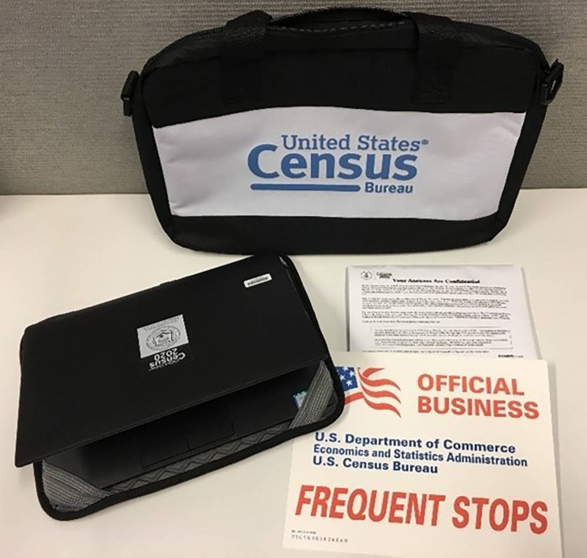
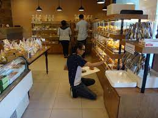

Brian Nguyen
I am a current junior student at University of California Riverside who is pursuing a Bachelor's Degree in Sociology. I attended Irvine Valley College, before transferring to University of California Riverside, and was awarded two Associates in Arts degrees. One in Natural Sciences And Mathematics and another in Social And Behavioral Sciences.
I have been a member of the workforce for the past four years with experience in different sectors such as: customer service and confidential data entry. Work experience in customer service is derived from working in the food service industry with customer interactions. I utilized communication skills to serve customers to their satisfaction and to collaborate with coworkers to meet customer needs. Handling sensitive information and data entry experience originates from employment through the United States Census Bureau as an enumerator. My job title of enumerator had responsibilities of interviewing residents and recording their responses through a verbal survey.
I am seeking to continue gaining work experience in relation to a Sociology major in a productive environment with a focus on Social Work. I also hope to continue my higher education and aim for a Master’s Degree in Sociology.
Experience
Enumerator
• Gathereed and organized sensitive personal information of California Residents through verbal interviews
• Interacted with members of the community and resolved various issues of different interview scenarios
• Collaborated with my supervisor on distributing essential documbents to other enumerators on the team
Prep Cook
• Managed the production of tea and drink toppings to company standards
• Explained training to new personnel and inspected their progress
• Tracked shelf life of produce and replaced when necessary
Store Front Associate
• Completed inventory checks at end of shifts
• Marketed and promoted new merchandise to increase sales
• Maintained the cleanliness of the store and organized the products in a presentable appealing manner
Education
UC Riverside
Portfolio

